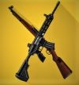

Comparison of powerful ARs- the 7.62 mm category
AKM vs Groza comparison
AKM
- Bullet speed(initial) : 715 m/s
- Time b/w shots: 0.1s
- Firing Modes: Single,Auto
- Body Damage:
- None: 47.00
- Lvl.1: 34.30
- Lvl.2: 29.40
- Lvl.3: 22.00
- Headshot Damage:
- None: 115.10/Knock-out
- Lvl.1: 80.10
- Lvl.2: 69.00
- Lvl.3: 51.80
- Full Duration(magazine): 2.9 sec.
- Commonly found, high damage with high recoil AR. Second most dangerous weapon. Good iron-sight too.
Groza
- Bullet speed(initial) : 715 m/s
- Time b/w shots: 0.08s
- Firing Modes: Single,Auto
- Body Damage:
- None: 47.00
- Lvl.1: 34.30
- Lvl.2: 29.40
- Lvl.3: 22.00
- Headshot Damage:
- None: 115.10/Knock-out
- Lvl.1: 80.10
- Lvl.2: 69.00
- Lvl.3: 51.80
- Full Duration(magazine): 3.0 sec.
- Found in Air Drops, high damage and high recoil. A dangerous weapon in close combat.